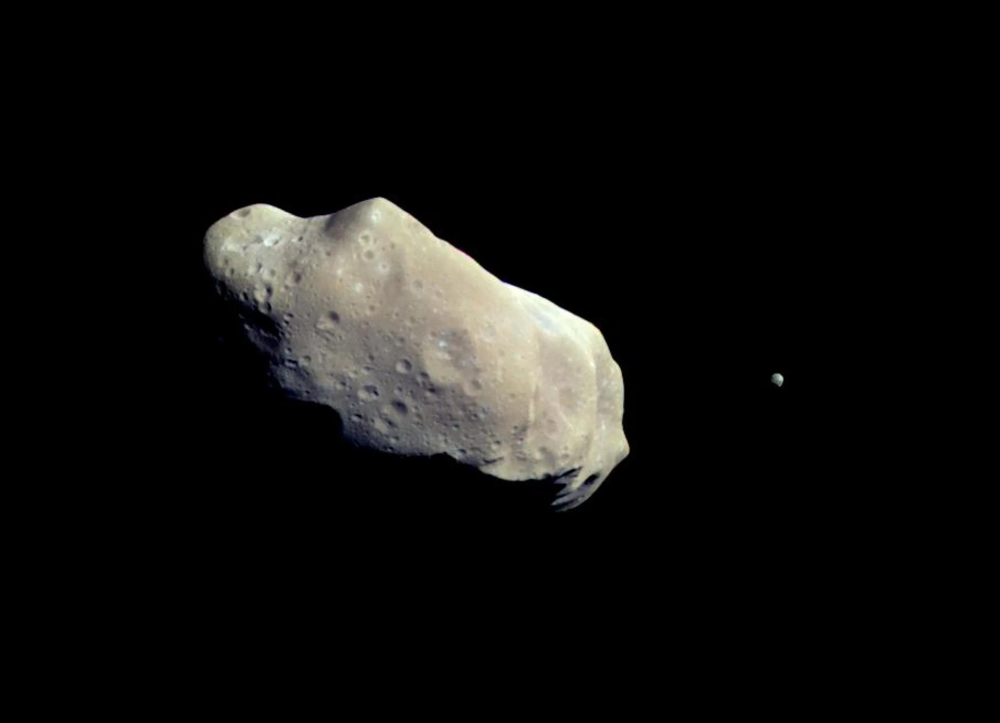

Asteroides

Muchos meteoros han cambiado muy poco en los 4.600 millones de años que han pasado desde los inicios de su formación. Su estado relativamente original les permite ofrecer una excelente crónica de las condiciones que existían en el sistema solar primitivo. Pueden revelar secretos sobre nuestros orígenes y contienen un registro de los procesos y eventos que llevaron al nacimiento de nuestro mundo. Estos objetos podrían ofrecer pistas acerca de dónde provienen el agua y las materias primas que hicieron posible la vida en la Tierra.